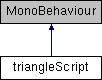

ANST_Project
Main Page
Classes
Class List
Class Index
Class Hierarchy
Class Members
Public Member Functions
|
Public Attributes
|
List of all members
triangleScript Class Reference
Inheritance diagram for triangleScript:

Public Member Functions
void
setSpeed
(int x)
void
OnBecameInvisible
()
Public Attributes
Vector2
speed
The documentation for this class was generated from the following file:
AOT2/Assets/Scripts/triangleScript.cs
Generated on Wed Apr 22 2015 16:32:37 for ANST_Project by
1.8.9.1
 1.8.9.1
1.8.9.1